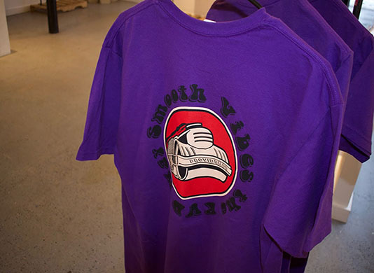
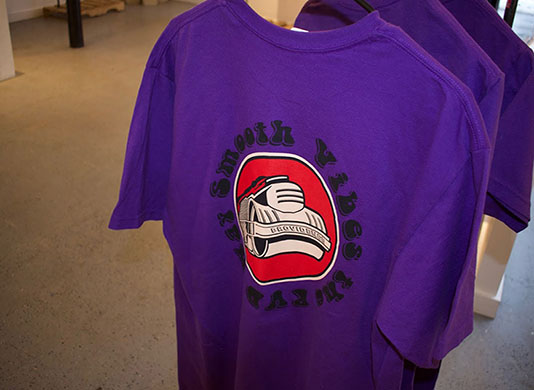

| |
|
|
|
|---|
My name is Markeem Rodrigues and I am a first year student at URI. I am Cape Verdean but I was born in Providence, RI. Some things I love to do is DJ, make music, take pictures and meet new people!
I have djed the first URI party which was this past Friday and I do not plan on letting up, make sure to book me for all your needs!
I also have a creative brand called AUXILIARY. AUXILIARY strives to be the best creative brand from Providence. Established in 2018, AUXILIARY started off as a clothing brand to make some quick cash but as soon as I realized that I was inspiring others I just had to keep going! AUXILIARY will be on top soon, mark my words!
 
